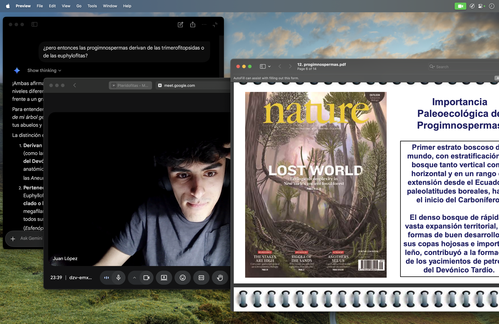
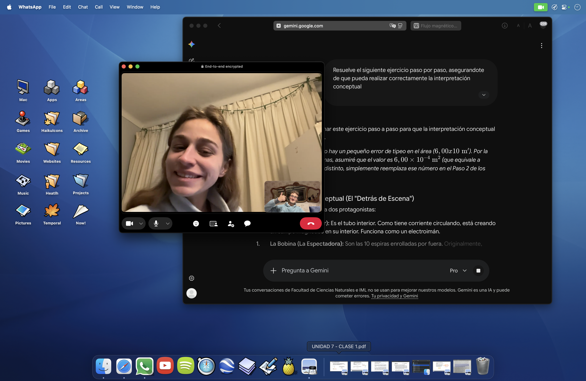
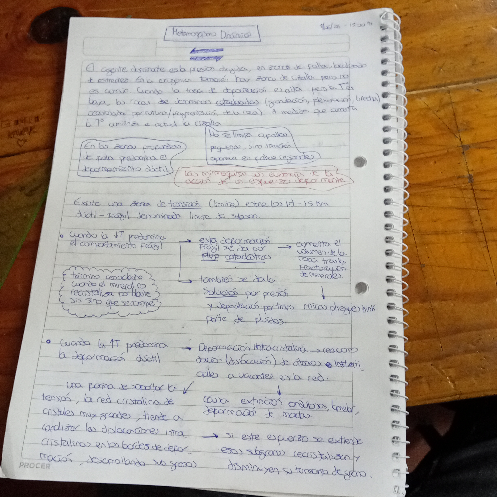
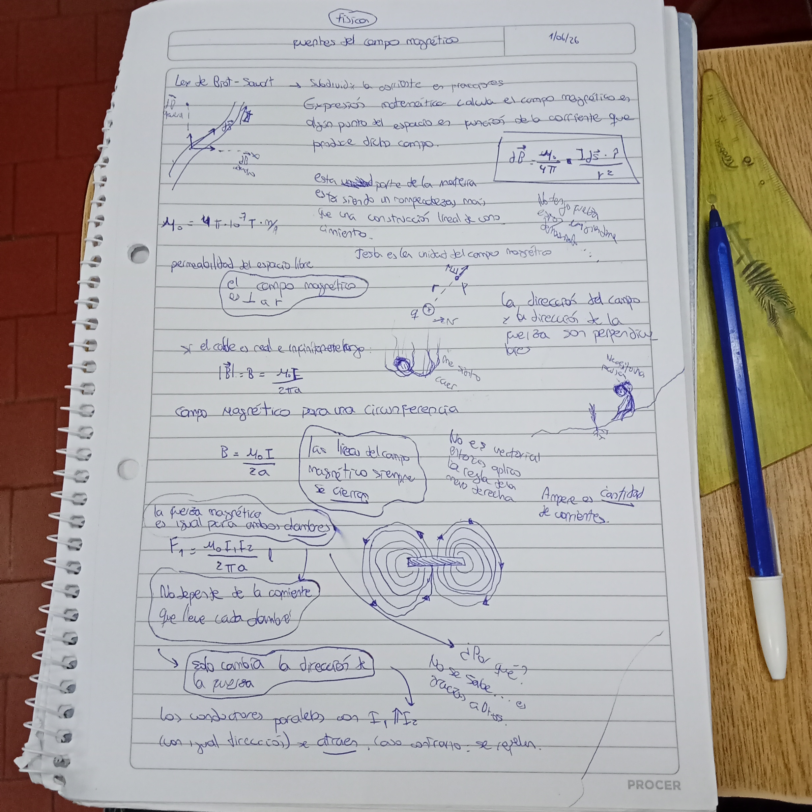
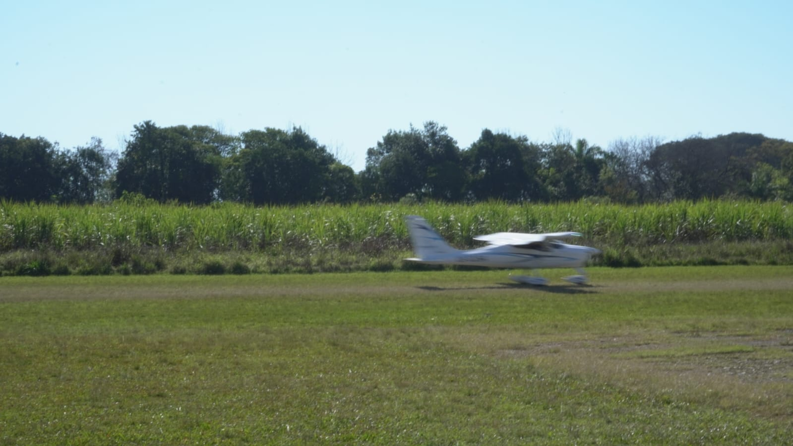

Ahora
Archivo de lo que voy viviendo.
27/07/2026
Tenemos una abogada en la familia
La pachi se recibió finalmente. La verdad que tantos años de estudio deben dejarte agotado. Supongo que ella no se olvidará del 27/07/2026 nunca, yo no me olvidaría.
16/07/2026
Resumen de Junio en casi la mitad de Julio
Me acordé de muchas fotos de momentos lindos de Junio. Quiero subirlos para acordarme que no fue todo solamente estudiar y sufrir y quejarse.
15/07/2026
Fuimos a tafí y a la final también.
Este es de los primeros mundiales que veo activamente porque no soy muy futbolero pero me estoy re divirtiendo. Nos tomamos una semanita en tafí y los invité a los chicos y se sintió como un mes entero de descanso que hermoso.
¿?/¿?/2026
Recordando tiempos oscuros
Me encantan estas cuatro fotos adjuntas porque demuestran muy bien como me esforcé en ser una persona humana sensible y cansable este cuatrimestre espantoso. Para que yo no me diga a mi mismo después que no hago nada más que estudiar sin razón. Estudié y lo hice con mucho empeño, buena onda y muy buena compañía a pesar de todo.

jajajaj juancho y yo probablemente nos habremos quedado hasta tarde. Siempre nos quedamos hasta tarde.
ahora con la emi. Las noches de cowork fueron muchas largas y oscuras. dormí muy poco esos meses. Me da risa ver como fueron cambiando los looks de mi compu, da para charla
Fui aprendiendo a administrar mejor la energía a la hora de tomar nota. Ya voy a hablar mejor sobre eso.
Por ejemplo, esta vez no supe administrar bien mi energía a la hora de tomar nota jajahfajhsf. Que locura como influye el factor humano en estas cosas. La verdad que lo dí todo. Me encanta comparar estas dos fotos porque se ve con toda claridad lo mucho que me esforcé. Es muy importante descansar, no solo el cuerpo durmiendo bien, sino el alma, dandole lugar a la vida humana.11/07/2026
Por fin un breve descanso.
Me colgué un poco de subir cosas al blog, pero estuve reflexionando mucho y la nube en la que venía viviendo está de a poquito disipándose.Estoy contento porque el Señor me regaló un respiro. Fue el día de la Patria y lo disfruté mucho. Pasaron varias cosas en esta primer semana de vacaciones, tanto que se siente como si hubiese pasado más tiempo. Empecé folklore. Estoy muy contento porque el invierno/otoño está durando mucho y yo estoy pudiendo disfrutarlo bastante.

Facu sacó esta foto de fran volando. La verdad que me encanta. el padre tomás estuvo en la casa de Pier cuando fue su día, que lujo.
el padre tomás estuvo en la casa de Pier cuando fue su día, que lujo.
 se me hace super interesante y entusiasmante pensar en que esa persona verdaderamente existió y vivió muy cerca de Jesús toda su vida, y hacía cosas normales como tener un cuaderno dónde anotaba cosas.
se me hace super interesante y entusiasmante pensar en que esa persona verdaderamente existió y vivió muy cerca de Jesús toda su vida, y hacía cosas normales como tener un cuaderno dónde anotaba cosas.
 gracias Señor por este clima tan acogedor. No quiero olvidarmelo nunca.
gracias Señor por este clima tan acogedor. No quiero olvidarmelo nunca.
 disfruté mucho del otoño, gracias gracias gracias. miren de linda que me salió la foto yo la siento casi real. Me pone cursi el invierno.
disfruté mucho del otoño, gracias gracias gracias. miren de linda que me salió la foto yo la siento casi real. Me pone cursi el invierno.
 con la emi salimos a un bar super lujoso por primera vez y conversamos un montón. Seguro algún día de estos lo documente un poquito.
con la emi salimos a un bar super lujoso por primera vez y conversamos un montón. Seguro algún día de estos lo documente un poquito.
 DETALLE IMPORTANTE: ARRANCO EL MUNDIAL y Argentina viene muy bien.
DETALLE IMPORTANTE: ARRANCO EL MUNDIAL y Argentina viene muy bien.
 hoy vinieron los oratorianos dsp de tanto tiempo. Los extrañamos, me regaló mi papá ayer una boina y hoy la regalé yo a un seminarista que parecía quererla mucho. Mi papá no sabe, no le digan jeje.
hoy vinieron los oratorianos dsp de tanto tiempo. Los extrañamos, me regaló mi papá ayer una boina y hoy la regalé yo a un seminarista que parecía quererla mucho. Mi papá no sabe, no le digan jeje.
21/06/2026
Este mes fue infinito. Todos estos meses fueron infinitos. Pero hoy es el día del padre.
Además de rendir, cursar, rendir, estudiar y rendir, tuve un poco de vida. Aquí están las pruebas. Feliz día pa! Te mereces un descanso.


0?/0?/2026
Una foto de Paraguay 🇵🇾
Me da curiosidad este país.
05/06/2026
El segundo cafesito de la semana
La Emi me volvió adicto a los cafeistos y Fran me hizo ejercer la adicción. Hablamos de cosas tremendas, como la digitalización de la vida y lo raro que se siente. También de como Google eventualmente iba a conquistar el planeta.

03/06/2026
Viajé a Tafí con la gente de Petrología
Fue linda la campaña pero me dejó muerto. Lo peor de ir de caminata no es que caminemos mucho, es que paramos cada dos minutos por media hora y eso te cansa mucho. Aparte no habia llegado a afeitarme.

01/06/2026
Recibiendo junio con un cafesito
Acaba de empezar la semana y estabamos todos cansados. Fran nos invitó a tomar un café a la Shell. Es muy gracioso como es un evento masculino tomar un café en una estación de servicio. Hablamos de varias cosas como la frustración, las novias, el paso del tiempo, el futuro, el trabajo, el estudio y nuestros miedos. Estabamos todos un poquito bajoneados, quizás es la famosa crisis de los 20.

30/05/2026
Planté una suculenta
En mi casa, mi mamá nos quiere a los varones como los cuidadores oficiales del jardín. Todos lo intentamos y tratamos de perseverar lo más que se puede. En el verano más que nada hacemos algo. Yo tengo la condición de tocar-matar en la jardinería. Así que estoy entrenando, esta va a ser mi primer plantita oficialmente mía y voy a encargarme de no muera. Voy a estar contandoles como viene la mano.

25/05/2026
Feliz día de la Patria
Hoy deberíamos todos tener una escarapela.

24/05/2026
Caos
la idea era hacer un antes y un después pero hice solo un antes.


20/05/2026
Estoy viviendo el otoño
Me encanta cómo se ve el otoño. Acá es como que el sol es muy brillante y todo se ve en reposo. Es muy descansador.


16/05/2026
Conociendo un barsito nuevo
Quedaba un poco más lejos. Hablamos de lo frustrado que me sentí por la facultad.

17/04/2026
Cumple Draculín 20 años. 🎉
Drac festejó su cumple en su casa, Germán cocinó las hamburguesas a la parrilla. Fran y yo llegamos cuando todo ya estaba hecho y las novias estaban invitadas. Nos sacamos un par de fotos. Tocamos la "Chacarera Del Desautado".


10/04/2026
Salida con la Emi después de Pascua
Salimos con la Emi a comer hamburguesas para conversar y ponernos al día por un rato. Venimos teniendo semanas muy largas y frías.

05/04/2026
Cierre Pascua Joven
Al final salió todo bien. Estuve sin celular por esos días y me sirvió mucho para entregarme a los otros.

23/03/2026
El árbol del siambon
Fuimos con los chicos a buscar madera para que lolo pueda tallar. Terminamos talando un árbol.


22/03/2026
Comiendo Papas
Hoy la Emi de la nada me llamó para preguntarme si quería salir a comer papas. Le dije que si.


21/03/2026
Convivencia pre-Pascua Joven
Fue medio agotador, pero estuvo genial, los chicos le pusieron un montón de esfuerzo, recen por nosotros, para que salga todo bien.